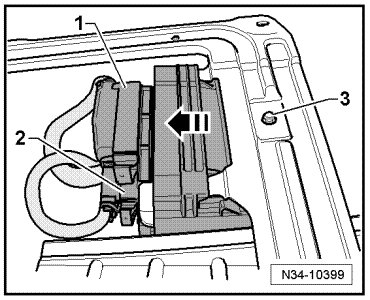
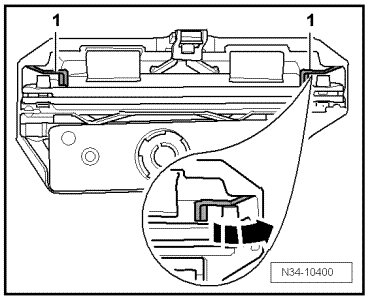
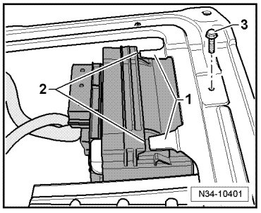

Differential Control Module
Differential Control Module
Removing
- Remove the right front seat.
- If equipped, remove the cover from seat frame.
- First check whether a coded radio is installed. In this case, find out the anti theft coding.
- Switch the ignition and all electrical components off, and remove the ignition key.
- Disconnect the ground terminal connector from the battery. Refer to.
- Separate the connector - 1 - at differential control module (J646) and, if equipped, the connector - 2 - at transmission control module (J217).

- Remove the bolt - 3 -.
- Pull the retainer with differential control module (J646) in - direction of arrow - out of the bracket on the seat frame.
- Press the retaining tabs - 1 - in - direction of arrow - and pull the differential control module (J646) out of the retainer. Make sure that the differential control module (J646) does not fall to the floor.

Installing
Install in reverse sequence; note the following points:
- Push the retainer for differential control module (J646) with the latches - 2 - into the recesses - 1 - of the seat frame.

- Install and tighten the bolt - 3 - to 8 Nm.
- Connect ground terminal connector to battery and perform the work sequences after connecting the battery.